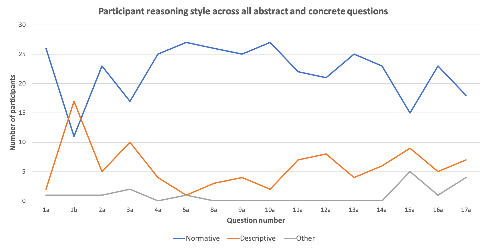

Defeasible Reasoning
Introduction
Differences in reasoning is common amongst humans. In the artificial intelligence and cognitive science community, an important question has been to model human reasoning behaviour. As a result, forms of non-classical or non-monotonic reasoning have been developed as flexible approaches to model human reasoning. Defeasible reasoning is one form of non-monotonic reasoning. It is based on non-absolute information about the state of the world which allows a reasoning agent to draw flexible conclusions. Defeasible reasoning is flexible in that new evidence presented to a reasoning agent has the potential to strengthen the original conclusion, or invalidate it.
Example
Suppose we know the following:
(i) Sarah is a linguist
(ii) Linguists typically speak more than three languages
Can we infer that Sarah speaks more than three languages? The answer depends on whether Sarah is a typical linguist or not. If Sarah is a typical linguist, we can infer that she speaks more than three languages. If Sarah is an atypical linguist, we cannot infer that she speaks more than three languages.
Research Questions
RQ1. To what extent do the formal properties of defeasible reasoning correspond with human reasoning?
RQ2. Does defeasible reasoning compare normatively or descriptively with the reasoning style of humans?
KLM Defeasible Reasoning Postulates

Additional Defeasible Reasoning Postulates
Survey Design and Execution
The Kraus-Lehmann-Magidor (KLM) [1] defeasible properties are formulated using propositional logic notation. These properties were used as the basis for a survey which compared human reasoning to defeasible reasoning. The survey contained abstract and concrete reasoning questions. For each a question, a KLM [1] defeasible reasoning property was translated into its English meaning . The property was then applied to both an abstract and a concrete reasoning scenario. The survey participants were required to agree or disagree with the proposed conclusion, given for each reasoning scenario, and motivate their answer. In the above linguist example, the two statements are formulated according to the defeasible reasoning property of Transitivity. The assumption made is that if the participant agrees with the proposed conclusion, then the property being tested holds with their answer. The final survey was developed using Google Forms and conducted on Amazon’s Mechanical Turk. Due to time constraints, the survey was conducted with 30 participants.
Key Findings
In Figure 1, we see that the KLM [1] property of Or was present in over 50% of the participants' answers, as was the case for the properties of Contraposition and Transitivity. In the concrete case, we found that over 50% of participants were able to reason both prototypically and presumptively.
Figure 1
Figure 1
A normative reasoning style and a descriptive reasoning style was defined in the final paper. In Figure 2, we observe that a normative reasoning style generally prevailed across both concrete questions (Q1-9) and abstract questions (Q10-17). Future work entails conducting this survey experiment with a larger population sample.
Downloads
References
[1] S. Kraus, D. Lehmann and M. Magidor. 1990. Nonmonotonic reasoning, preferential models and cumulative logics. Artificial Intelligence 44 (1990), p167–207